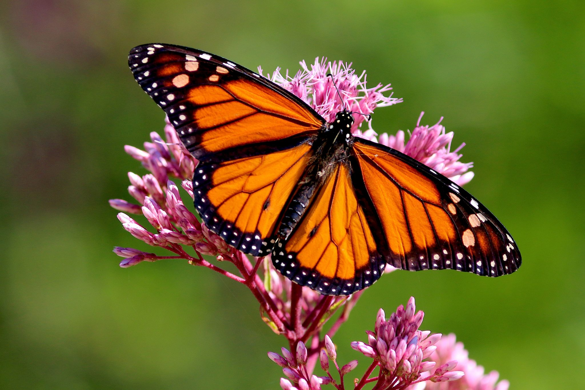

images

this is a link of butterfly information
the birds is beutiful We cannot describes my words
the buterfly
The very differnt type of most beutiful buterfly
buterly its word are very beutiful
h2o
nws
butterfly is fluethe insects
(superfamily Papilionoidea), any of numerous species of insects belonging to multiple families.
Butterflies, along with the moths and the skippers, make up the insect order Lepidoptera. Butterflies are nearly worldwide
in their distribution.
Learn about bionics and understand the toughness of silk produced by several animals like the Morpho butterfly and silkworm,
also a study on the bright, iridescent blue color of the Morpho butterfly
Learn about bionics and understand the toughness of silk produced by several animals like the Morpho butterfly
and silkworm, also a study on the bright, iridescent blue color of the Morpho butterflySee all videos for this article
Chrysalis of the mourning cloak butterfly (Nymphalis antiopa) suspended by the cremaster, head downward.
The wings, bodies, and legs, like those of moths, are covered with dustlike scales that come off when the animal is handled.
.
Unlike moths, butterflies are active during the day and are usually brightly coloured or strikingly patterned.
Perhaps the most distinctive physical
features of the butterfly are its club-tipped antennae and its habit of holding the wings vertically over the back when at rest. The lepidopteran life cycle has four stages: egg, larva (caterpillar), pupa (chrysalis), and adult (imago).
The larvae and adults of most butterflies feed on plants,
often only specific parts of specific types of plants.